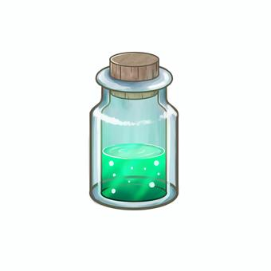
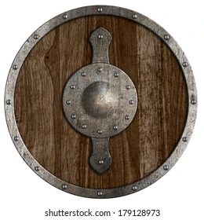
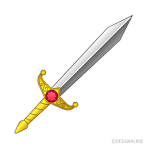

ゲーム概要
「ドラゴンスレイヤー」はファンタジー世界を舞台にしたRPGです。プレイヤーは勇敢な冒険者となり、ドラゴンを倒すために冒険に出ます。
キャラクター
このゲームに登場するキャラクターです。
- 勇敢な戦士
- 賢明な魔法使い
- 熟練の弓使い
敵キャラクター
このゲームに登場する敵キャラクターです。
アイテム
ゲーム内で使用できるアイテム一覧：
| アイテム名 | 効果 | 画像 |
|---|---|---|
| 回復薬 | HPを50回復する |  |
| 魔法の杖 | 魔法攻撃力を上昇させる | |
| 鋼の盾 | 防御力を上昇させる |  |
| 勇者の剣 | 攻撃力を上昇させる |  |
攻略のヒント
ドラゴンスレイヤーを倒すためのヒント：
- 最初に弱い敵から倒してレベルを上げましょう。
- 戦闘前に十分なアイテムをそろえましょう。
- ドラゴンには、魔法を使うことで有利に戦えます。
- ドラゴンの攻撃を避けることが重要です。回避スキルを使いましょう。
有用なリソース
ゲーム攻略に役立つリソース：